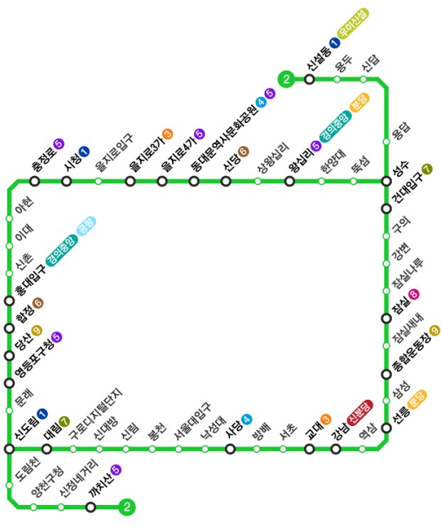

서울 지하철의 한 노선이자 수도권 전철의 운행계통. 1984년 5월 22일에 완전개통하여 순환선이 되었다. 운영기관은 서울교통공사이며 운행하는 열차는 서울교통공사 2000호대 전동차, 통행방식은 우측통행이다. 노선색은 초록색이다. 기본적으로 순환선이지만 차량기지 입출고 선로를 활용해 만든 성수지선과 신정지선도 있다.
서울 지하철(수도권 전철) 1~9호선 중 6호선과 함께 전 구간, 전 역이 서울특별시 관내에 있는 단 둘 뿐인 노선 중 하나이다.
서울 도심 구간 일부를 고가철도로 지나고 한강을 건널 때 두 번 다 철교(잠실철교, 당산철교)로 건너기 때문에 고가전철 안에서 빌딩 숲 풍경을 감상한다는 도시의 로망을 실현시켜주는 몇 안 되는 노선 중 하나이다. 한강구간을 건너면서 여러 한강 다리들과 남북으로 도심이 펼쳐져 있는 풍경을 보게 되면 서울의 스카이라인의 경관에 저절로 감탄하게 된다.